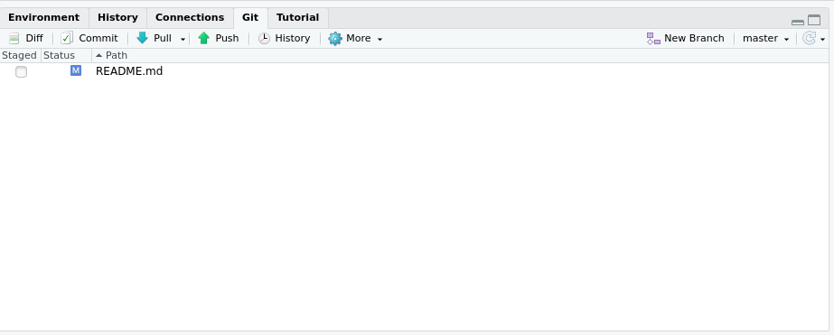

Reproducible research
"Reproducibility, also known as replicability and repeatability, is a major principle underpinning the scientific method. For the findings of a study to be reproducible means that results obtained by an experiment or an observational study or in a statistical analysis of a data set should be achieved again with a high degree of reliability when the study is replicated. ... With a narrower scope, reproducibility has been introduced in computational sciences: Any results should be documented by making all data and code available in such a way that the computations can be executed again with identical results."
Project-oriented workflow: good practice
Properly managing data and other research outputs should starts at the beginning of your project. It should then and continue throughout!
To setup an RStudio .RProj project go to Project (top right) > New Project > Create Project
Best-practice tips
- Be organised: set up each each assignment/university course as a project
- Ensure your project is self-contained. A project is a folder that should contain all the relevant files and all paths should be relative to that project
- Always apply the 5 Cs: be Clear, Concise, Consistent, Correct, and Conformant.
- Naming files should be descriptive and consistent!
- Include a README file that summarises your project's structure
- Provide a detailed description of the data, data source(s), and how it will be used.
- Describe all the steps of data preprocessing.
- Provide a description and information about each new version of the data.
- Provide details about the software/code that is used for preprocessing the data.
- Include brief examples of how your code works.
- Generate a list of all scripts, how to run them, and in what order.
- When structuring your project directory consider the following:
- Put code and data in separate subdirectories.
- Plan to separate raw data from processed data.
- An example of a well-structured directory
- ProjectName/
- README.MD
- Dataset/
- Raw Data/
- Processed Data/
- Analysis (or Code or Scripts)/
- Data cleaning/
- Data preprocessing/
- Output/
- Graphs
- Tables
- ProjectName/
Always start with a clean workspace Why? So your ex (code) can't come and mess up your life!

To ensure this go to Tools > Global Options and uncheck the highlighted options.

⚠️Warning⚠️
If the first line of your R script issetwd("C:\Users\jenny\path\that\only\I\have")I will come into your office and SET YOUR COMPUTER ON FIRE üî•. If the first line of your R script isrm(list = ls())I will come into your office and SET YOUR COMPUTER ON FIRE üî•.
Why? Because, this is not reproducible, does NOT create a fresh R process, makes your script vulnerable, and it will come back to bite you.
Version control with git and GitHub

Git is a version control system that manages the evolution of a set of files, called a repository (repo), in a structured way (think of Word's Track Changes). With Git you can track the changes you make to your project/code. You will always have a record of what you've worked on and can easily revert back to an older version if you make a mistake. GitHub is a hosting service that provides a home for your Git-based projects on the internet (think of Dropbox). In addition, GitHub offers functionality to use Git online via an easy-to-use interface. Both Git and GitHub can very easily be configured to work with RStudio.
Below are some key terms you will undoubtedly hear when delving into the git--GitHub world.
Repository (already mentioned) This where the work happens--think of it as your project folder. It should contain all of your project’s files etc.
Cloning A repository on GitHub is stored remotely in the cloud. To create a local copy of this repository you can clone it and use Git to sync the two.
Committing and pushing are how you can add the changes you made on your local machine to the remote repository in GitHub. You can make a commit when you have made milestone worthy changes to your project. You should also add a helpful commit message to remind future you, or your teammates, what the changes you made were (e.g., fixed the bug in my_function).
Setting up
- Register an account with GitHub https://github.com. I would recommend choosing the free option!
- Make sure you've got the latest version of
R
R.version.string## [1] "R version 4.1.2 (2021-11-01)"- Upgrade
RStudioto the new preview version (optional) - Install git: follow these instructions
- Get started
Cloning a repository from GitHub using RStudio
- In
GitHub, navigate to the Code tab of the repository and on the right side of the screen, clickClone or download. - Click the
Copy to clipboardicon to the right of the repository URL
- Open
RStudioin your local environment - Click
File,New Project,Version Control,Git

- Paste the repository URL and enter TAB to move to the
Project directory namefield.
Create Project. Your Files pane should now look similar to this

Commiting and pushing changes
- Open a file from your project directory (here I've opened the file
README.md). Note that theGitpane (top right) is empty

- Make a change to your file and save. Now note that the
Gitpane (top right) is not empty:

Check this file in the
Gittab (it is now staged for commit).Click the Commit button. A new pane will open. Changes made to the file will be highlighted (additions in green and deletions in red). Now write your self an informative message in the top right of this pop-up:

- Click the Commit button below the message you've just written. A new pop up will let you know how things are going! You can then close both popups.

Now you'll see RStudio has left you a little message in the
Gittab, something similar toYour branch is ahead of origin/master by 1 commit. This means that you've made and commited your changes locally (i.e., on your computer) but you are yet to push these changes to GitHub.To push to GitHub press the Push button,

A new pop up will let you know how things are going! You can then close this once it gives you the option to.